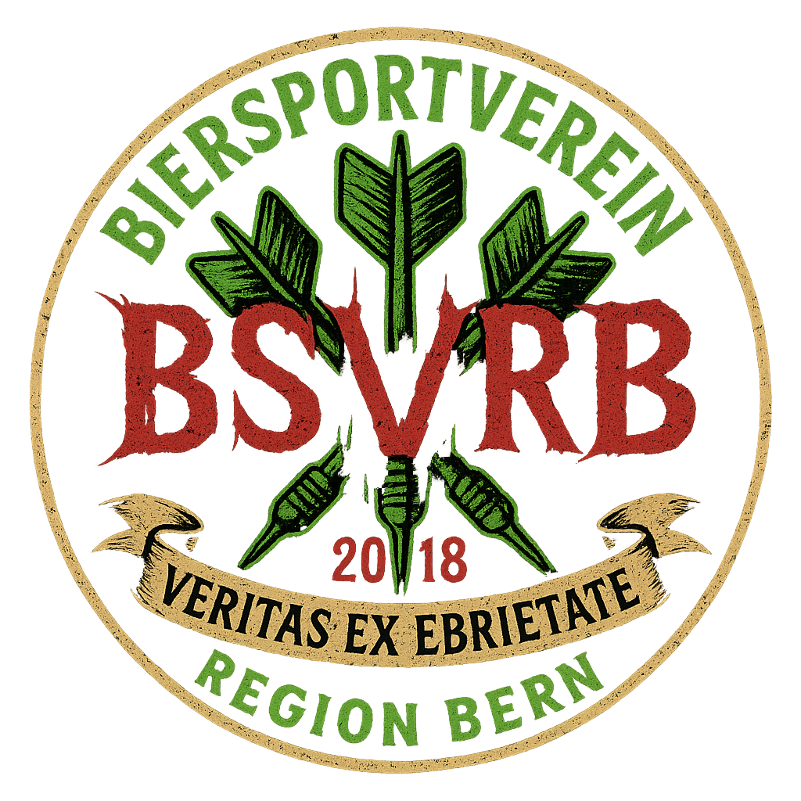

Skip to main content

Gesellschaft + Genuss
🏠
⚙
🔑
Signup
?
Schwerpunkte
Bier, Solidarität, Vielfalt, Region, Begegnung
Brauchbare Strukturen für Verantwortung, Respekt und Beziehung
Bündnis für Substanz, Vielfalt, Rausch & Bewusstsein (sanft anarchisch)